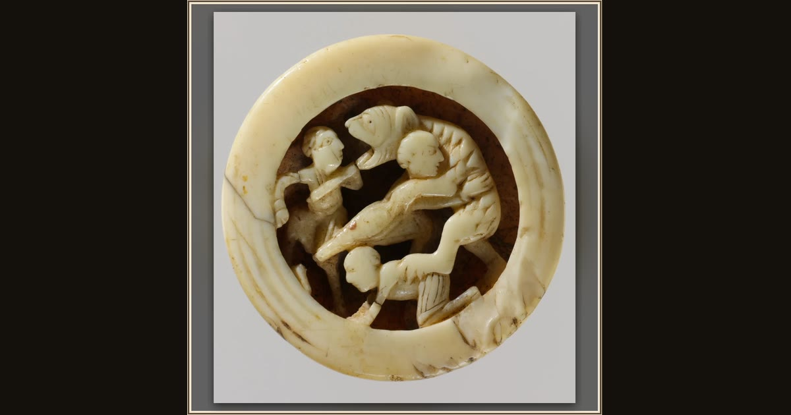

Game Piece with Menelaus and Companions Battling Proteus
North French · ca. 1125–50 · The Metropolitan Museum of Art · New York, USA
This tiny medieval game piece may show Menelaus and his companions refusing to release Proteus as the sea-god changes into a beast. In Book 4 they hold on until he tells Menelaus how to get home. Explore its place in Book IV of the Odyssey.